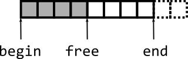
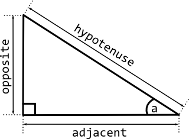
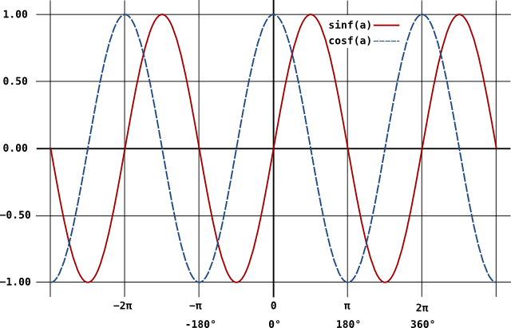

Shoot-em up
My plan for this class:
- recap
- plan for catching up the missing week
- sfxr
- a program to make sound effects for you
- the program is free to use
- in the libraries/lib folder
- generated effects are random
- no problems with rights issues
- usage:
- double click sfxr
- click randomize
- click export .wav
- dot-blaster
- play through
- again based on "objects" project
- walk-through from main
- include guards on object.h
- templates
- new collection: pools
- a subset of a larger array:

- move the free part of the subset to add or remove
- copy to free to add
- copy from the end to the removed entry
- distance using Pythagoras' theorem:

- trigonometry functions
- radians to degrees
- generating pi
- rotations with sin and cos:

- break
- no exercise this week
- chance to catch up on previous exercises
- demonstrate your understanding of:
- abstraction
- variables and functions
- libraries
- objects
- you will get points for:
- consistent style (use astyle to help)
- sensible variable names
- respecting the law of Demeter
- submitting only the required files
- useful comments (the comment must add something)
- you will lose points for:
- badly formatted code or inconsistent style
- contradictory or bizarre variable names
- missing files
- warnings or errors in your build
- contradictory or redundant comments